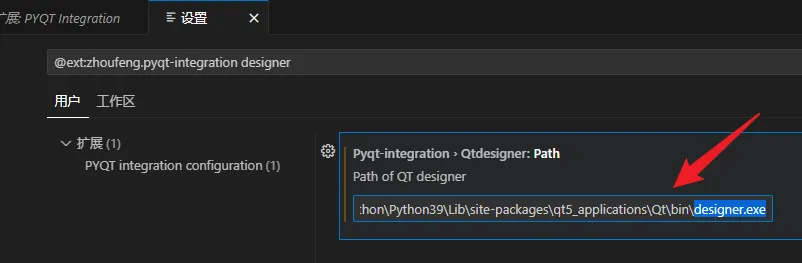
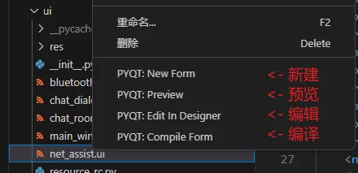
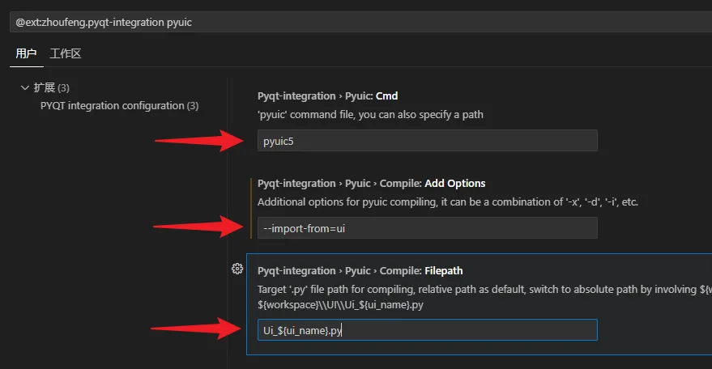
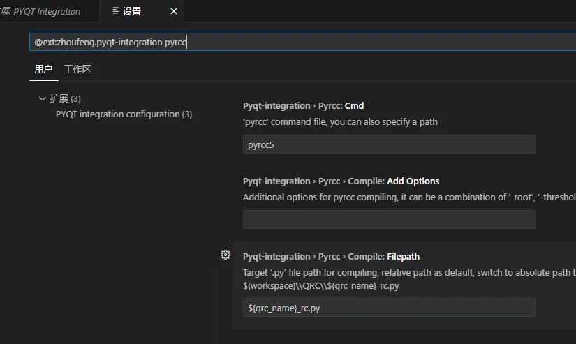
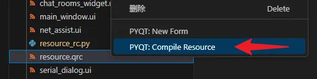
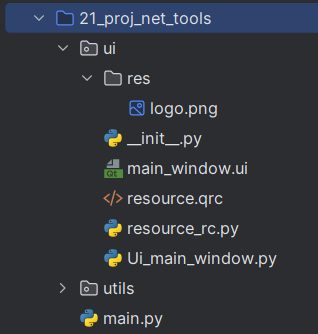

<!DOCTYPE lake>
<p data-lake-id="u003c98c4" id="u003c98c4"><span data-lake-id="udbefd483" id="udbefd483" style="color: rgb(38, 38, 38)">PyQt5提供了一个可视化图形工具</span><span data-lake-id="uf02b9d09" id="uf02b9d09" style="color: rgb(38, 38, 38)">Qt Designer</span><span data-lake-id="u9c1e8485" id="u9c1e8485" style="color: rgb(38, 38, 38)">，文件名为</span><span data-lake-id="uf2701e27" id="uf2701e27" style="color: rgb(38, 38, 38)">designer.exe</span><span data-lake-id="u07a9d9d0" id="u07a9d9d0" style="color: rgb(38, 38, 38)">。如果在电脑上找不到，可以用如下命令进行安装：</span><span data-lake-id="u06e42311" id="u06e42311" style="color: rgb(38, 38, 38)"><br/></span><span data-lake-id="uf4de204e" id="uf4de204e" style="color: rgb(38, 38, 38)">安装完毕后，可在如下目录找到此工具软件：</span><span data-lake-id="u66eeda1a" id="u66eeda1a" style="color: rgb(38, 38, 38)"><br/></span><span data-lake-id="u3f8c1c9c" id="u3f8c1c9c" style="color: rgb(38, 38, 38)">%LOCALAPPDATA%\Programs\Python\Python39\Lib\site-packages\qt5_applications\Qt\bin\designer.exe</span><span data-lake-id="u3cc92765" id="u3cc92765" style="color: rgb(38, 38, 38)"><br/></span><span data-lake-id="u1a3d3d83" id="u1a3d3d83" style="color: rgb(38, 38, 38)"><br/></span><span data-lake-id="u671c112a" id="u671c112a" style="color: rgb(38, 38, 38)">注意：</span><span data-lake-id="ua9bb801e" id="ua9bb801e" style="color: rgb(38, 38, 38)">%LOCALAPPDATA%</span><span data-lake-id="u67808ad2" id="u67808ad2" style="color: rgb(38, 38, 38)">通常代表</span><span data-lake-id="u967cd4ef" id="u967cd4ef" style="color: rgb(38, 38, 38)">C:\Users\你的用户名\AppData\Local\</span><span data-lake-id="ub53bf517" id="ub53bf517" style="color: rgb(38, 38, 38)"><br/></span><strong><span class="lake-fontsize-18" data-lake-id="u13e0e95d" id="u13e0e95d" style="color: rgb(38, 38, 38)">VSCode添加外部工具</span></strong><span class="lake-fontsize-18" data-lake-id="ub38d9715" id="ub38d9715" style="color: rgb(38, 38, 38)"><br/></span><strong><span class="lake-fontsize-14" data-lake-id="uef3e9122" id="uef3e9122" style="color: rgb(38, 38, 38)">QtDesigner</span></strong><span class="lake-fontsize-14" data-lake-id="u23c166c1" id="u23c166c1" style="color: rgb(38, 38, 38)"><br/></span><span data-lake-id="u98047c5b" id="u98047c5b" style="color: rgb(38, 38, 38)">打开</span><span data-lake-id="uab9ca571" id="uab9ca571" style="color: rgb(38, 38, 38)">PYQT Integration</span><span data-lake-id="u941c65d2" id="u941c65d2" style="color: rgb(38, 38, 38)">插件设置，搜索</span><span data-lake-id="uf784ef83" id="uf784ef83" style="color: rgb(38, 38, 38)">designer</span><span data-lake-id="uadeda6f2" id="uadeda6f2" style="color: rgb(38, 38, 38)">，将自己本地的</span><span data-lake-id="ubabe7c40" id="ubabe7c40" style="color: rgb(38, 38, 38)">designer.exe</span><span data-lake-id="u92503c25" id="u92503c25" style="color: rgb(38, 38, 38)">完整路径设置进去。</span><span data-lake-id="uf75601b1" id="uf75601b1" style="color: rgb(38, 38, 38)"><br/><br/></span></p><p data-lake-id="u153f57ad" id="u153f57ad"></p><p data-lake-id="u2c776bb5" id="u2c776bb5"><span data-lake-id="ua98c194c" id="ua98c194c" style="color: rgb(38, 38, 38)"><br/></span><span data-lake-id="ub1982f90" id="ub1982f90" style="color: var(--yq-text-primary)">注意，如果找不到</span><span data-lake-id="u07eff27d" id="u07eff27d" style="color: var(--yq-text-primary)">designer.exe</span><span data-lake-id="u7a812542" id="u7a812542" style="color: var(--yq-text-primary)">：</span><span data-lake-id="u6799fcce" id="u6799fcce" style="color: var(--yq-text-primary)"><br/></span><span data-lake-id="u219444d5" id="u219444d5" style="color: var(--yq-text-primary)">1</span><span data-lake-id="u6c7d2da1" id="u6c7d2da1" style="color: var(--yq-text-primary)">Program路径要根据自己安装的PyQt5-tools路径设置（</span><span data-lake-id="ub6e4e985" id="ub6e4e985" style="color: var(--yq-text-primary)">pip install PyQt5-tools</span><span data-lake-id="ud489be20" id="ud489be20" style="color: var(--yq-text-primary)">）</span><span data-lake-id="u6f9d06b8" id="u6f9d06b8" style="color: var(--yq-text-primary)"><br/></span><span data-lake-id="u09a076d3" id="u09a076d3" style="color: var(--yq-text-primary)">2</span><span data-lake-id="ubced661b" id="ubced661b" style="color: var(--yq-text-primary)">安装的PyQt5-tools路径的取决于安装Python时的路径（</span><span data-lake-id="ub4c9995b" id="ub4c9995b" style="color: var(--yq-text-primary)">pip -V</span><span data-lake-id="ua4c7a4d6" id="ua4c7a4d6" style="color: var(--yq-text-primary)">可以看到路径）</span><span data-lake-id="uea0348d1" id="uea0348d1" style="color: var(--yq-text-primary)"><br/></span><span data-lake-id="u3451824c" id="u3451824c" style="color: var(--yq-text-primary)">3</span><span data-lake-id="u09b7039e" id="u09b7039e" style="color: var(--yq-text-primary)">如果用的是Python3.9.x，尝试用以下路径文件（先尝试在Win+R中能否打开）：</span><span data-lake-id="u26fe0c41" id="u26fe0c41" style="color: var(--yq-text-primary)"><br/></span><span data-lake-id="ufb02c44c" id="ufb02c44c" style="color: var(--yq-text-primary)">%LOCALAPPDATA%\Programs\Python\Python39\Lib\site-packages\qt5_applications\Qt\bin\designer.exe</span><span data-lake-id="uf0e472de" id="uf0e472de" style="color: var(--yq-text-primary)"><br/></span><span data-lake-id="uc626c518" id="uc626c518" style="color: var(--yq-text-primary)">4</span><span data-lake-id="ua341a74f" id="ua341a74f" style="color: var(--yq-text-primary)">实在找不到，建议安装</span><span data-lake-id="u86e573dc" id="u86e573dc" style="color: var(--yq-text-primary)">everything.exe</span><span data-lake-id="ue858e193" id="ue858e193" style="color: var(--yq-text-primary)">，全局搜索</span><span data-lake-id="u82c5c372" id="u82c5c372" style="color: var(--yq-text-primary)">designer.exe</span><span data-lake-id="u91d02ad0" id="u91d02ad0" style="color: var(--yq-text-primary)">位置</span><span data-lake-id="ue70ff3fd" id="ue70ff3fd" style="color: var(--yq-text-primary)"><br/></span><span data-lake-id="u929e532d" id="u929e532d" style="color: rgb(38, 38, 38)">设置完成后，我们可以在</span><span data-lake-id="u91871c99" id="u91871c99" style="color: rgb(38, 38, 38)">.ui</span><span data-lake-id="ub26e835f" id="ub26e835f" style="color: rgb(38, 38, 38)">文件右键进行如下操作：</span><span data-lake-id="ud9277b88" id="ud9277b88" style="color: rgb(38, 38, 38)"><br/><br/></span></p><p data-lake-id="u01c662d7" id="u01c662d7"></p><p data-lake-id="ud75604d1" id="ud75604d1"><span data-lake-id="u27e2e749" id="u27e2e749" style="color: rgb(38, 38, 38)"><br/></span><span data-lake-id="u8ed9ab89" id="u8ed9ab89" style="color: rgb(38, 38, 38)">也可以在任意目录右键新建ui文件</span><span data-lake-id="u9898890e" id="u9898890e" style="color: rgb(38, 38, 38)"><br/></span><strong><span class="lake-fontsize-14" data-lake-id="u778be68c" id="u778be68c" style="color: rgb(38, 38, 38)">PyUIC</span></strong><span class="lake-fontsize-14" data-lake-id="u2aaf4118" id="u2aaf4118" style="color: rgb(38, 38, 38)"><br/></span><span data-lake-id="uad2aaaaf" id="uad2aaaaf" style="color: rgb(38, 38, 38)">打开设置，过滤pyuic，按照下图填写：</span><span data-lake-id="uc9a2b709" id="uc9a2b709" style="color: rgb(38, 38, 38)"><br/></span><span data-lake-id="u5b1ded59" id="u5b1ded59" style="color: rgb(38, 38, 38)">●</span><span data-lake-id="u801bfbac" id="u801bfbac" style="color: rgb(38, 38, 38)">Cmd：</span><span data-lake-id="ue8c0ff10" id="ue8c0ff10" style="color: rgb(38, 38, 38)">pyuic5</span><span data-lake-id="uaacc0942" id="uaacc0942" style="color: rgb(38, 38, 38)"><br/></span><span data-lake-id="ubb652eff" id="ubb652eff" style="color: rgb(38, 38, 38)">●</span><span data-lake-id="u42c6dc56" id="u42c6dc56" style="color: rgb(38, 38, 38)">Add Options：</span><span data-lake-id="uc336a95e" id="uc336a95e" style="color: rgb(38, 38, 38)">--import-from=ui</span><span data-lake-id="ubc8566b9" id="ubc8566b9" style="color: rgb(38, 38, 38)"><br/></span><span data-lake-id="u04d91aa3" id="u04d91aa3" style="color: rgb(38, 38, 38)">●</span><span data-lake-id="ufff1a6a9" id="ufff1a6a9" style="color: rgb(38, 38, 38)">Filepath：</span><span data-lake-id="u92dcd903" id="u92dcd903" style="color: rgb(38, 38, 38)">Ui_${ui_name}.py</span><span data-lake-id="u2a0d9028" id="u2a0d9028" style="color: rgb(38, 38, 38)"><br/><br/></span></p><p data-lake-id="u1a8200af" id="u1a8200af"></p><p data-lake-id="ue2f61c0b" id="ue2f61c0b"><span data-lake-id="u89248099" id="u89248099" style="color: rgb(38, 38, 38)"><br/></span><span data-lake-id="u0081fec0" id="u0081fec0" style="color: rgb(38, 38, 38)">这个配置是为了右键</span><span data-lake-id="uba80d24c" id="uba80d24c" style="color: rgb(38, 38, 38)">.ui</span><span data-lake-id="uc25fb4c1" id="uc25fb4c1" style="color: rgb(38, 38, 38)">文件时，点击</span><span data-lake-id="u1ce8320d" id="u1ce8320d" style="color: rgb(38, 38, 38)">PYQT:Compile Form</span><span data-lake-id="ua1725464" id="ua1725464" style="color: rgb(38, 38, 38)">时，能生成对应</span><span data-lake-id="u6d8d4a5b" id="u6d8d4a5b" style="color: rgb(38, 38, 38)">.py</span><span data-lake-id="u3a2b0b00" id="u3a2b0b00" style="color: rgb(38, 38, 38)">文件</span><span data-lake-id="u2e6cdd9e" id="u2e6cdd9e" style="color: rgb(38, 38, 38)"><br/></span><strong><span class="lake-fontsize-14" data-lake-id="ub4769a50" id="ub4769a50" style="color: rgb(38, 38, 38)">PyRCC</span></strong><span class="lake-fontsize-14" data-lake-id="u5a9e7dfa" id="u5a9e7dfa" style="color: rgb(38, 38, 38)"><br/></span><span data-lake-id="uae1fbd04" id="uae1fbd04" style="color: rgb(38, 38, 38)">确保配置如下即可：</span><span data-lake-id="u0c7413f2" id="u0c7413f2" style="color: rgb(38, 38, 38)"><br/><br/></span></p><p data-lake-id="u1fd8a744" id="u1fd8a744"></p><p data-lake-id="ua49a273e" id="ua49a273e"><span data-lake-id="u0e5f7401" id="u0e5f7401" style="color: rgb(38, 38, 38)"><br/></span><span data-lake-id="uef07a907" id="uef07a907" style="color: rgb(38, 38, 38)">添加完成后，可在</span><span data-lake-id="ue8107abe" id="ue8107abe" style="color: rgb(38, 38, 38)">.qrc</span><span data-lake-id="ubc24412d" id="ubc24412d" style="color: rgb(38, 38, 38)">文件右键点击</span><span data-lake-id="u7bd898d8" id="u7bd898d8" style="color: rgb(38, 38, 38)">PYQT: Compile Resource</span><span data-lake-id="u1b8c0c57" id="u1b8c0c57" style="color: rgb(38, 38, 38)">，即可生成对应的</span><span data-lake-id="u31204b4b" id="u31204b4b" style="color: rgb(38, 38, 38)">.py</span><span data-lake-id="uac254ab9" id="uac254ab9" style="color: rgb(38, 38, 38)">资源文件。</span><span data-lake-id="ub5c85d5a" id="ub5c85d5a" style="color: rgb(38, 38, 38)"><br/><br/></span></p><p data-lake-id="ue3250834" id="ue3250834"></p><p data-lake-id="u6f9d6593" id="u6f9d6593"><span data-lake-id="ubd13ddf1" id="ubd13ddf1" style="color: rgb(38, 38, 38)"><br/><br/></span><strong><span class="lake-fontsize-18" data-lake-id="u0dd2383f" id="u0dd2383f" style="color: rgb(38, 38, 38)">加载UI文件模板代码</span></strong><span class="lake-fontsize-18" data-lake-id="u0c3cbd62" id="u0c3cbd62" style="color: rgb(38, 38, 38)"><br/><br/></span></p><h3 data-lake-id="hMkOG" id="hMkOG"><span class="lake-fontsize-14" data-lake-id="u6e161bd3" id="u6e161bd3" style="color: rgb(38, 38, 38)">QMainWindow</span></h3><p data-lake-id="u17fdb459" id="u17fdb459"><span class="lake-fontsize-14" data-lake-id="u2efdd0be" id="u2efdd0be" style="color: rgb(38, 38, 38)">我们通过可视化工具</span><code data-lake-id="u5862786a" id="u5862786a"><span class="lake-fontsize-14" data-lake-id="u231ad0d4" id="u231ad0d4" style="color: rgb(38, 38, 38)">QtDesigner</span></code><span class="lake-fontsize-14" data-lake-id="uce2b5772" id="uce2b5772" style="color: rgb(38, 38, 38)">生成</span><code data-lake-id="u54b9b5f9" id="u54b9b5f9"><span class="lake-fontsize-14" data-lake-id="ueba3c2aa" id="ueba3c2aa" style="color: rgb(38, 38, 38)">.ui</span></code><span class="lake-fontsize-14" data-lake-id="u16707e7c" id="u16707e7c" style="color: rgb(38, 38, 38)">文件后，需要在代码中加载并显示。可参照</span><code data-lake-id="ub27b23ed" id="ub27b23ed"><span class="lake-fontsize-14" data-lake-id="ue5a61c50" id="ue5a61c50" style="color: rgb(38, 38, 38)">PyUIC</span></code><a data-lake-id="u981a8da8" href="../../Python%E4%B8%8E%E4%B8%8A%E4%BD%8D%E6%9C%BA%E5%BC%80%E5%8F%91/%E4%B8%8A%E4%BD%8D%E6%9C%BA%E5%BC%80%E5%8F%91-PyQt5/Qt%20Designer.html#VNtxP" id="u981a8da8"><span class="lake-fontsize-14" data-lake-id="u297e9d11" id="u297e9d11">部分教程</span></a><span class="lake-fontsize-14" data-lake-id="u54957cec" id="u54957cec" style="color: rgb(38, 38, 38)">进行转换。</span></p><p data-lake-id="ued418faf" id="ued418faf"><span class="lake-fontsize-14" data-lake-id="uf0fc5b66" id="uf0fc5b66" style="color: rgb(38, 38, 38)">​</span><br/></p><p data-lake-id="u0e6b9067" id="u0e6b9067"><span class="lake-fontsize-14" data-lake-id="ud0aebdcc" id="ud0aebdcc" style="color: rgb(38, 38, 38)">使用</span><code data-lake-id="ua68a0287" id="ua68a0287"><span class="lake-fontsize-14" data-lake-id="u127afedf" id="u127afedf" style="color: rgb(38, 38, 38)">xxx.ui</span></code><span class="lake-fontsize-14" data-lake-id="uf388d487" id="uf388d487" style="color: rgb(38, 38, 38)">生成</span><code data-lake-id="u372c81d5" id="u372c81d5"><span class="lake-fontsize-14" data-lake-id="u3c93ed88" id="u3c93ed88" style="color: rgb(38, 38, 38)">xxx.py</span></code><span class="lake-fontsize-14" data-lake-id="uab5e9171" id="uab5e9171" style="color: rgb(38, 38, 38)">代码文件后，可使用如下代码进行加载。</span></p><p data-lake-id="ue1968521" id="ue1968521"><span class="lake-fontsize-14" data-lake-id="uf1d9b03b" id="uf1d9b03b" style="color: rgb(38, 38, 38)">注意，本例的</span><code data-lake-id="u9c6cd5be" id="u9c6cd5be"><span class="lake-fontsize-14" data-lake-id="ue5ed4e7f" id="ue5ed4e7f" style="color: rgb(38, 38, 38)">ui</span></code><span class="lake-fontsize-14" data-lake-id="u32a8433b" id="u32a8433b" style="color: rgb(38, 38, 38)">相关文件都在</span><code data-lake-id="uf138b357" id="uf138b357"><span class="lake-fontsize-14" data-lake-id="u1e87e3c4" id="u1e87e3c4" style="color: rgb(38, 38, 38)">ui</span></code><span class="lake-fontsize-14" data-lake-id="u19da48d8" id="u19da48d8" style="color: rgb(38, 38, 38)">目录下，即加载的</span><code data-lake-id="u97a93cc1" id="u97a93cc1"><span class="lake-fontsize-14" data-lake-id="uf4562f94" id="uf4562f94" style="color: rgb(38, 38, 38)">ui</span></code><span class="lake-fontsize-14" data-lake-id="ubedae32a" id="ubedae32a" style="color: rgb(38, 38, 38)">包下的</span><code data-lake-id="ue9ebb60a" id="ue9ebb60a"><span class="lake-fontsize-14" data-lake-id="u65c4a216" id="u65c4a216" style="color: rgb(38, 38, 38)">ui_main_window</span></code><span class="lake-fontsize-14" data-lake-id="u0fc22441" id="u0fc22441" style="color: rgb(38, 38, 38)">模块</span></p><span class="yuque-card-unsupported">[codeblock]</span><p data-lake-id="u5479668f" id="u5479668f"><span data-lake-id="ua706a2fb" id="ua706a2fb">目录结构如下</span></p><p data-lake-id="u347258ff" id="u347258ff"></p><h3 data-lake-id="GpnRM" id="GpnRM"><span data-lake-id="u0ff4b8a0" id="u0ff4b8a0">QWidget</span></h3><span class="yuque-card-unsupported">[codeblock]</span><h3 data-lake-id="QKVye" id="QKVye"><span data-lake-id="u86af8655" id="u86af8655">QDialog</span></h3><span class="yuque-card-unsupported">[codeblock]</span>